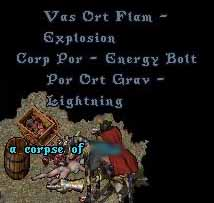
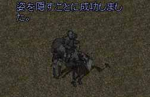
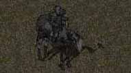
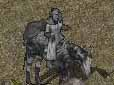
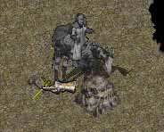
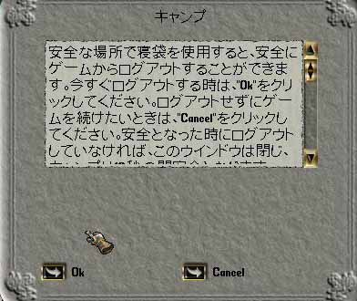

<< 鉱山PKテクニック >>
まず、鉱山PKですから、掘り師を殺さないと始まりません。
地味に待つか、動き回るかです。
あなたが鉱山PKを始めた時、プロ掘師の存在を知り驚くことでしょう。
プロ堀師は姿を見せずにやって来ます。
「ざくっざくっ」と自分のハイド姿しか見えない鉱山の中で掘る音が聞こえます。
トラッキングで見つけても、あっという間に消えてしまします。
そう。彼らはプロテクション済、FC4騎士移動＆ハイド掘りというプロF堀師なのです。
姿を見せた時は騎士移動詠唱中。彼らを倒すことは不可能に近いです。
そんな人たちを殺すのは無理です。そんなん殺せてたら普通に対人してます。
我々は底辺らしく、対人とか興味の無い赤い名前を見てあたふたする堀師のみを殺すことが可能なのです。
では殺し方です
（初級編）
走り回り、見つけたらパラを入れてから魔法をがんがん打ち込む。
これにつきます。
詠唱妨害なんて無いと思って下さい。
されたら死ねばいいです。
APBを持っていた堀師には敬意を表し死んで下さい。
武器でどうしてもやりたいなら、HIDEXでSPM無しで
がんがん殴るのも春っぽくていいですね。

（中級編）
ハイド待ち
ただひたすらに待ちます。
鉱山ブックで掘った後（Oreが残っていた形跡）を見つけたらそこでハイドです。





